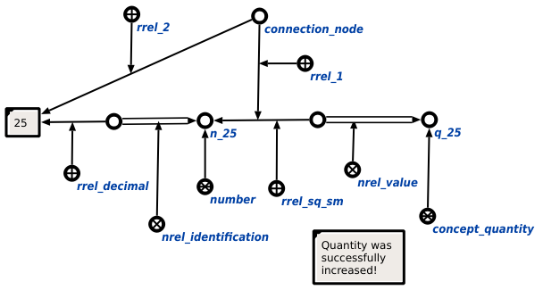

Задачей scp-программы повышения или понижения степени величины является повышение или понижение степени величины. Первым входным параметром данной scp-программы является множество, в которое под атрибутом 1' входит дуга принадлежности, уточняемая атрибутом размерности, под атрибутом 2' - значение sc-ссылки, найденное из цепочки значения или идентификации. Вторым входным параметром является число, обозначающее степень повышения или понижения степени для величины. Третьим входным параметром является комментарий об успешности выполнения scp-программы. В ходе выполнения программы явно указывается связь со следующими ключевыми узлами: порядковым атрибутом 1', а также отношениями единица измерения в квадрате* и единица измерения в кубе*. Ниже представлены результаты выполнения процедуры:
